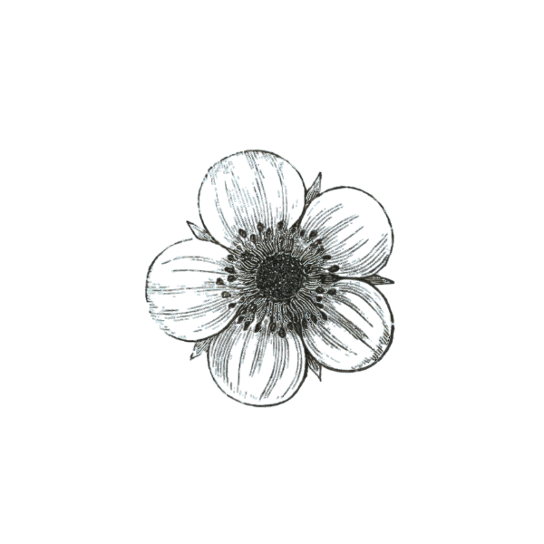
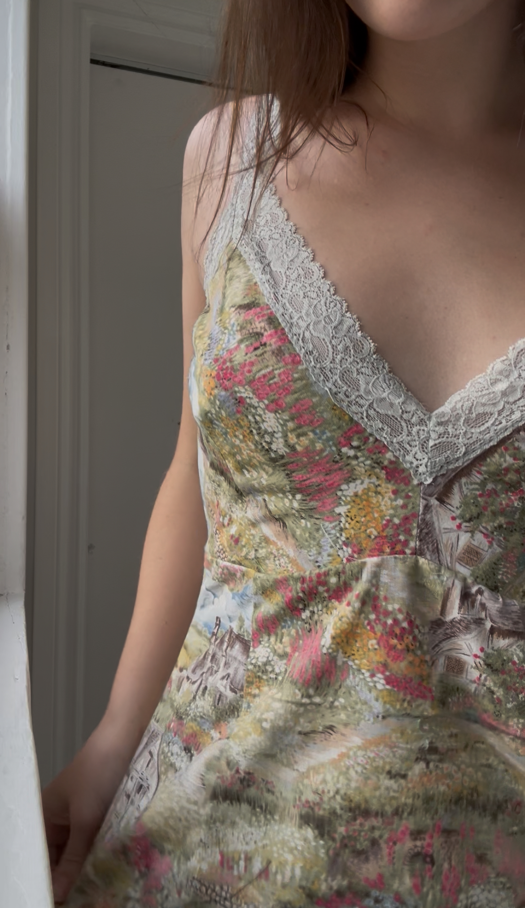

LOOK 01
images/look-01.jpg
Collection 01 / 2026
Inherited
Forms
Garments shaped from fragments, pattern and the visual language of domestic textiles.
Available pieces ↗
Midsummers Shop Depop ↗FASHION / ART / TEXTILE

Crafted from reminants of the past.
Midsummers explores the preservation and design heritage of vintage textiles — tracing the lives of tapestries, quilts and forgotten cloth into present forms.
Collection 01 / 2026
Garments shaped from fragments, pattern and the visual language of domestic textiles.
Available pieces ↗Collection 02 / 2026
A study of worn surfaces, faded colour and the marks left by use.
Available pieces ↗
For the story.
Selected Midsummers pieces are available for styling pulls, editorials, campaigns and creative projects.
Request a pull ↗Midsummers is a fashion and art practice founded by designer Summer Courtemanche in Northern Ontario. Rooted in vintage textiles, sustainable practices and the belief that one of one pieces are for all folks.
Through sourcing and honoring each textile with careful placement, drafting and construction, the studio considers how design, texture and wear can carry memory forward.
Midsummers / 2026